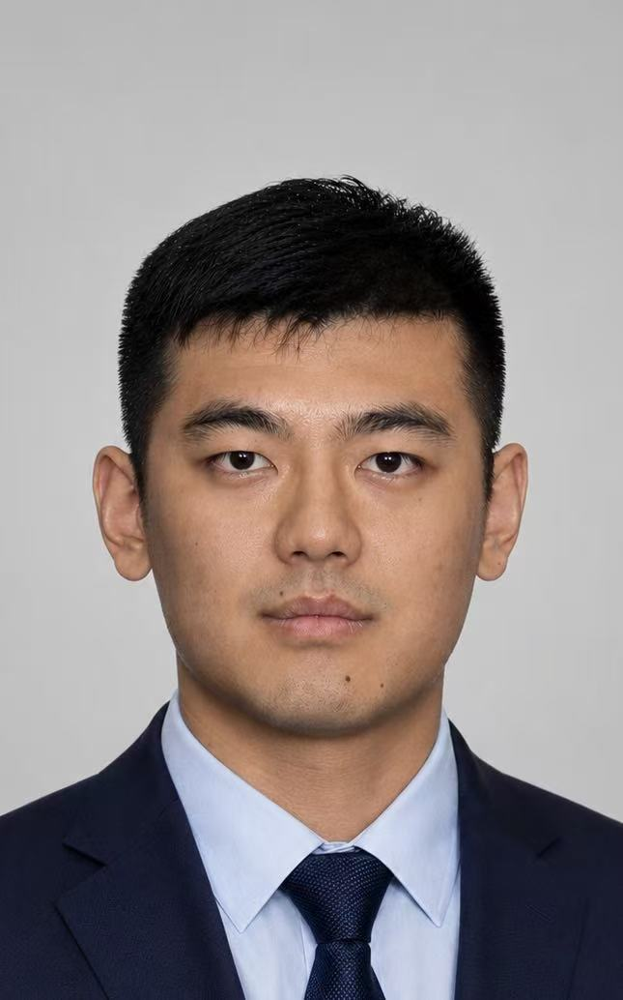

Mingjie Li
Tenure-track Associate Professor, Shanghai Jiao Tong University

About
I am a tenure-track Associate Professor at the School of Automation and Intelligent Sensing, Shanghai Jiao Tong University, where I work closely with Prof. Hesheng Wang. I am a recipient of the National Science Fund for Excellent Young Scholars (Overseas) and the Shanghai Magnolia Talent Program. My research centers on medical world models and vision reasoning for surgical robotics, with a broader interest in multimodal medical intelligence, medical multimodal generation, and visual reasoning. I have led the HAI-Google Cloud Credits Grant, a Stanford Seed Grant, and an Australian GRIP project, and have published in venues including IEEE TPAMI, TNNLS, TIP, CVPR, NeurIPS, ECCV, and Pattern Recognition. My work is also shaped by active international collaborations with Stanford University and other institutions.
Before joining Shanghai Jiao Tong University, I was a Postdoctoral Scholar in The Computational Neuroscience Laboratory (CNSLAB) at Stanford University. I was advised by Prof. Kilian M. Pohl and Prof. Lei Xing, and also worked closely with Dr. Ehsan Adeli. I received my Ph.D. in Computer Science from the Faculty of Engineering and Information Technology at the University of Technology Sydney, advised by Prof. Xiaojun Chang and Prof. Yi Yang. I have also maintained long-term collaboration with Prof. Xiaodan Liang. Before UTS, I spent two very happy years as a Ph.D. candidate at Monash University.
上海交通大学自动化与感知学院智能机器人与机器视觉实验室自2026年暑期开始招收博士后、博士研究生和硕士研究生， 欢迎对医学人工智能、多模态学习、医学影像生成与理解、手术机器视觉推理等方向感兴趣的同学联系我。
Research Interests
- Medical multimodal foundation models and medical world models
- Medical report generation, radiology reasoning, and clinical language-vision learning
- Medical image generation, enhancement, segmentation, and representation learning
- Surgical machine vision reasoning and trustworthy medical AI
News
- May 2026: Joined Shanghai Jiao Tong University as a tenure-track Associate Professor.
- 2026: Papers accepted to IEEE TPAMI, IEEE TMI, IEEE TNLS, Pattern Recognition and CVPR Findings.
- 2025: Presented medical imaging work at AAPM, including an oral presentation.
Selected Publications (* refers to equal contribution)
- Advancing In-Context Learning for Efficient and Stable Medical Report Generation. Mingjie Li*, Rui Liu*, Zeyi Shi, Mingfei Han, Lina Yao, Zhihui Li, Xiaojun Chang, Kilian M. Pohl, Md Tauhidul Islam, and Lei Xing. IEEE Transactions on Pattern Analysis and Machine Intelligence, 2026.
- Modality-Aware and Anatomical Vector-Quantized Autoencoding for Multimodal Brain MRI. Mingjie Li, Edward Kim, Yue Zhao, Ehsan Adeli, and Kilian M. Pohl. CVPR Findings, 2026.
- A Generative Foundation Model for Multimodal Histopathology. Jinxi Xiang*, Mingjie Li*, Siyu Hou, Yijiang Chen, Xiangde Luo, Yuanfeng Ji, Xiang Zhou, Ehsan Adeli, Akshay Chaudhari, Curtis P Langlotz, Kilian M Pohl, Ruijiang Li arXiv preprint arXiv:2604.03635, (Nature Biomedical Engineering Revision) 2026.
- Knowledge-Guided Multi-Modality Transformer for Multi-Label Genetic Mutation Prediction. Gexin Huang*, Chenfei Wu*, Mingjie Li*, Xiaojun Chang, Ying Sun, Lei Xing, Xiaodan Liang, Liang Lin, Guang Yang, Shen Zhao Pattern Recognition, 2026.
- A Benchmark for Cycling Close Pass Detection from Video Streams. Mingjie Li, Ben Beck, Tharindu Rathnayake, Lingheng Meng, Zijue Chen, Akansel Cosgun, Xiaojun Chang, Dana Kulić Transportation Research Part C: Emerging Technologies, 2025.
- Mitigating Data Redundancy to Revitalize Transformer-based Long-Term Time Series Forecasting System. Mingjie Li, Rui Liu, Guangsi Shi, Mingfei Han, Changlin Li, Lina Yao, Xiaojun Chang, Ling Chen ACM Transactions on Intelligent Systems and Technology, 2025.
- Contrastive Learning with Counterfactual Explanations for Radiology Report Generation. Mingjie Li, Haokun Lin, Liang Qiu, Xiaodan Liang, Ling Chen, Abdulmotaleb Elsaddik, and Xiaojun Chang. ECCV, 2024.
- In-context Learning for Zero-shot Medical Report Generation. Rui Liu*, Mingjie Li*, Shen Zhao, Ling Chen, Xiaojun Chang, and Lina Yao. ACM MM, 2024.
- Dynamic Graph Enhanced Contrastive Learning for Chest X-ray Report Generation. Mingjie Li, Bingqian Lin, Zicong Chen, Haokun Lin, Xiaodan Liang, and Xiaojun Chang. CVPR, 2023.
- Video Pivoting Unsupervised Multi-modal Machine Translation. Mingjie Li, Po-Yao Huang, Xiaojun Chang, Junjie Hu, Yi Yang, Alex Hauptmann. IEEE Transactions on Pattern Analysis and Machine Intelligence, 2023.
- Cross-modal Clinical Graph Transformer for Ophthalmic Report Generation. Mingjie Li, Wenjia Cai, Karin Verspoor, Xiaodan Liang, and Xiaojun Chang. CVPR, 2022.
- FFA-IR: Towards an Explainable and Reliable Medical Report Generation Benchmark. Mingjie Li, Wenjia Cai, Karin Verspoor, Xiaodan Liang, Xiaojun Chang, et al. NeurIPS, 2021.
Projects
- MUPAD A Generative Foundation Model for Multimodal Histopathology.
- CoFE Counterfactual explanations for contrastive learning in chest X-ray report generation.
- DCL Dynamic graph enhanced contrastive learning for chest X-ray report generation.
- GMT for Time Series Forecasting A generalizable memory-driven Transformer for multivariate long sequence forecasting.
- FFA-IR An explainable and reliable benchmark for fundus fluorescein angiography report generation.
- COV-CTR A COVID-19 CT reports dataset and medical report generation project.
Education
- Ph.D., University of Technology Sydney, ReLER Lab, 2023.
- Ph.D. Candidate, Monash University, Monash Machine Vision Group, 2019-2022.
- M.Eng., Shanghai Jiao Tong University, 2019.
- B.Eng., Harbin Institute of Technology, 2016.
Academic Service
Reviewer for ECCV, ACM MM, CVPR, ICCV, NeurIPS, ICLR, Nature Machine Intelligence, Nature Communications, IEEE TMI, IEEE TIP, IEEE TNNLS, IEEE TMM, and IEEE TSP.
Contact
School of Automation and Intelligent Sensing, Shanghai Jiao Tong University, Shanghai, China. Email: mingjie.li@sjtu.edu.cn